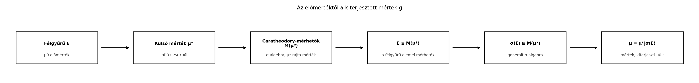

Az eddigi konstrukcióban három szintet választottunk szét: a
félgyűrűn adott előmértéket, az abból képzett
külső mértéket, és a Carathéodory-féle mérhető halmazok
σ-algebráját. A Külső mérték alfejezetben
megmutattuk, hogyan építhető egy előmértékből minden halmazon
értelmezett külső mérték, a Carathéodory-mérhetőség
és Carathéodory tétele alfejezetben pedig azt, hogy a külső mérték a
„jó” halmazokon mértékké válik. Hiányzik viszont az összekötő lépés:
a félgyűrű elemei valóban jó halmazok-e, és a kapott mérték
visszaadja-e az eredeti előmértéket. Emellett arra is
szükségünk van, hogy a generált σ-algebrán egyetlen
ilyen mérték létezzen, különben a méréselméleti konstrukció nem lenne
egyértelmű.
8.4.2 Szemléletes kép
A konstrukció láncát a következő ábra foglalja össze. A nyilak azt
mutatják, hogy az egyes objektumok hogyan öröklődnek tovább.

Az előmértéktől a kiterjesztett mértékig
- A kiterjesztési tétel lépései: az indukált külső mérték leszűkítése a
generált σ-algebrára.
Az ábra üzenete: a félgyűrűből kiindulva a generált σ-algebrán
egyértelmű mértéket kapunk, ha az előmérték σ-véges.
8.4.3 A kiterjesztési tétel
előkészítése
Először egy lemmát igazolunk. A lemma a konstrukció legfontosabb
technikai lépése: a félgyűrű elemei Carathéodory-mérhetők, és a külső
mérték a félgyűrűn visszaadja az előmértéket. A bizonyítás kulcsa a
félgyűrű tulajdonsága: egy félgyűrűbeli halmaz különbsége
felbontható véges sok diszjunkt félgyűrűbeli halmaz uniójára.
Ez teszi lehetővé, hogy a fedő halmazokat diszjunkt rendszerré
alakítsuk.
Segédállítás. Legyen
félgyűrű,
előmérték
-n.
Ha
,
akkor
véges sok páronként diszjunkt
-beli
halmaz uniója.
Ha
páronként diszjunkt részhalmazai a
halmaznak, akkor
.
Speciálisan az előmérték monoton:
esetén
.
Bizonyítás. (a) Indukció
szerint.
-re
ez a félgyűrű definíciója. Ha
véges diszjunkt unió,
,
akkor
;
minden
a félgyűrű definíciója szerint véges diszjunkt
-beli
unió, és a különböző
-khez
tartozó darabok diszjunktak, mert a
-k
azok.
Az (a) szerint
véges diszjunkt unió,
.
Így
a páronként diszjunkt
és
halmazok véges uniója. A véges additivitás (a σ-additivitás üres
halmazokkal kiegészítve,
)
szerint
.
∎
Lemma. Legyen
félgyűrű az
alaphalmazon,
előmérték
-n,
és legyen
a
által indukált külső mérték:
Ekkor:
minden
halmaz
-mérhető,
azaz
;
minden
halmazra
.
Bizonyítás. A második állítással kezdjük. Mivel
önmagát fedi, a definícióból
.
A fordított egyenlőtlenséghez megmutatjuk, hogy ha
,
ahol
,
akkor
Ehhez a fedő halmazokat diszjunkttá tesszük. Legyen
Mivel
és
,
a Segédállítás (a) szerint mindegyik
felbontható véges sok páronként diszjunkt
-beli
halmaz uniójára:
.
A
-ek
páronként diszjunktak, uniójuk
,
és
.
Az
halmazok tehát megszámlálható, páronként diszjunkt
-beli
felbontását adják az
halmaznak; mivel
előmérték, σ-additív, így
Rögzített
-re
az
(
véges) páronként diszjunkt
-beli
részhalmazai
-nek,
ezért a Segédállítás (b) szerint
Ezt
szerint összegezve
Mivel ez minden fedésre igaz,
,
amivel a második állítás teljes.
Az első állításhoz legyen
.
Ha
,
akkor a
egyenlőtlenség a jobb oldal
végtelensége miatt automatikusan teljesül. Feltehetjük tehát, hogy
,
és rögzítsünk egy
számot. Válasszunk
halmazokat úgy, hogy
Minden
-re
írjuk fel az
halmazt az
halmaz szerinti felbontásban:
Itt
,
és a félgyűrű tulajdonsága miatt
felbontható véges sok páronként diszjunkt
-beli
halmaz uniójára:
.
Ekkor
A külső mérték definíciójából
A véges additivitásból minden
-re
ezért
Mivel
tetszőleges volt, kapjuk, hogy
A másik irányú egyenlőtlenség mindig igaz a külső mérték
szubadditivitásából, tehát
.
∎
8.4.4 A kiterjesztési tétel és az
egyértelműség
Most összerakjuk a konstrukciót.
Tétel (Carathéodory kiterjesztési tétele). Legyen
félgyűrű,
előmérték
-n,
és legyen
a
által indukált külső mérték. Ekkor
mérték a
σ-algebrán, és minden
halmazra
.
Ha
σ-véges, akkor ez a kiterjesztés egyértelmű: ha
tetszőleges mérték
-n,
amelyre
minden
esetén, akkor
a
σ-algebrán.
Bizonyítás. A létezéshez alkalmazzuk az előző
lemmát:
.
A Carathéodory-mérhetőség és Carathéodory tétele
alfejezetben bebizonyítottuk, hogy
σ-algebra, és
leszűkítése
-ra
mérték. Mivel
a legszűkebb olyan σ-algebra, amely tartalmazza
-t,
és
tartalmazza
-t,
következik, hogy
.
Így
mérték. A lemma második állítása adja, hogy
minden
-re.
Az egyértelműséghez tegyük fel, hogy
σ-véges. Ez azt jelenti, hogy léteznek
halmazok, amelyekre
és
minden
-re.
A félgyűrű tulajdonságával ezeket diszjunkt rendszerré alakíthatjuk,
ezért feltehetjük, hogy az
halmazok páronként diszjunktak, és
.
Legyen
tetszőleges mérték
-n,
amely kiterjeszti
-t.
Rögzítsünk egy
indexet, és definiáljunk két véges mértéket a
σ-algebrán:
Ezek valóban végesek, mert
és hasonlóan
.
Továbbá az
π-rendszeren a két mérték megegyezik: ha
,
akkor
mert
,
és mindkét mérték kiterjeszti
-t.
Alkalmazzuk az egyértelműségi lemmát a Monotonitás,
szubadditivitás és a mérték folytonossága alfejezetből (a π-λ
hátteret a π-rendszerek, λ-rendszerek és a
Dynkin-tétel alfejezet adja). A lemma két feltétele teljesül:
egyrészt a
és
mértékek végesek, másrészt
azaz a teljes tömegük is megegyezik. Az
félgyűrű zárt a véges metszetekre, tehát π-rendszer, és generálja a
σ-algebrát. Ezért a lemma szerint minden
-re
a
σ-algebrán.
Végül bármely
halmazra, mivel az
halmazok diszjunktak és lefedik
-et,
A σ-additivitásból
Tehát
a
σ-algebrán. ∎
8.4.5 Ellenpélda nem σ-véges
esetben
A σ-végesség feltétele nem hagyható el. Ennek megmutatásához legyen
,
és legyen
a véges részhalmazok félgyűrűje. Az
halmazrendszer valóban félgyűrű: két véges halmaz metszete véges, és a
különbségük is véges, tehát egyetlen
-beli
halmaz. Definiáljuk az előmértéket
minden véges
halmazra.
A generált σ-algebra
azokból az
halmazokból áll, amelyek megszámlálhatók vagy
ko-megszámlálhatók, vagyis
megszámlálható, vagy a komplementere megszámlálható. Két különböző
mértéket is tudunk adni ezen a σ-algebrán, amelyek mindketten
kiterjesztik
-t:
minden
halmazra;
,
ha
megszámlálható, és
,
ha
ko-megszámlálható (vagyis a komplementere megszámlálható, de
maga nem megszámlálható).
Mindkét
és
mérték, és véges halmazokon mindkettő
,
tehát kiterjesztik
-t.
Ugyanakkor például
,
míg
,
ezért a kiterjesztés nem egyértelmű. Az előmérték itt nem σ-véges, mert
nem fedhető le megszámlálható sok véges halmazzal.
Megjegyzés. A σ-végesség nem szükséges feltétele az
egyértelműségnek, csak elégséges. Legyen
,
,
és definiáljuk a
előmértéket a
,
(ha
)
képlettel. Ez nem σ-véges, mert minden nemüres
-beli
halmaz mértéke végtelen. A
σ-algebrán mégis egyetlen kiterjesztése van: ha
mérték és kiterjeszti
-t,
akkor
,
ezért
,
és így
.
Az egyértelműség tehát σ-végesség nélkül is teljesülhet; a σ-végesség
elégséges, de nem szükséges feltétel.
8.4.6 A kiterjesztési módszer mint
recept
A fenti tétel egy általános módszert ad. Ha egy
mértéket akarunk konstruálni egy σ-algebrán, elég a következőket
megtenni:
találunk egy félgyűrűt, amely generálja a σ-algebrát;
megadunk rajta egy előmértéket, azaz egy σ-additív, nemnegatív
halmazfüggvényt;
az egyértelműséghez ellenőrizzük, hogy az előmérték σ-véges;
a Carathéodory-kiterjesztés σ-végesség nélkül is szolgáltat egy
kiterjesztést; ha az előmérték σ-véges, akkor ez a kiterjesztés
egyértelmű is.
Ezt a receptet használjuk a következő alfejezetekben:
A külső mérték és a mérték összekeverése. A külső
mérték minden halmazon értelmezett, de általában nem σ-additív a teljes
-en.
Csak a Carathéodory-mérhető halmazokra szorítkozva lesz belőle mérték. A
kiterjesztési tétel éppen azt biztosítja, hogy a generált σ-algebra
halmazai mind ilyenek.
Az egyértelműség automatikusnak gondolása. A fenti
ellenpélda mutatja, hogy σ-végesség nélkül több különböző kiterjesztés
is létezhet. A σ-végesség a bizonyításban azért fontos, mert így a teret
véges mértékű darabokra lehet vágni, és azokon már alkalmazható a π-λ
tételen alapuló egyértelműségi lemma.
Az összefűzés és az előmérték visszaadásának
összekeverése. Az előmértékből képzett külső mérték
definíciójában a fedő halmazok nem feltétlenül diszjunktak. A félgyűrű
tulajdonsága lehetővé teszi, hogy a fedés tagjait véges sok félgyűrűbeli
darabbal helyettesítsük, majd ezeket egymás után fűzzük; ez önmagában
még csak egy újabb fedést ad. Ahhoz, hogy a fedési költség ne
növekedjen, a darabokat a diszjunkttá tétellel páronként diszjunkt
félgyűrűbeli halmazokra kell bontani, és fel kell használni, hogy az
előmérték az ilyen diszjunkt felbontáson additív. Csak ezzel a lépéssel
kapjuk meg a
egyenlőtlenséget, amelyre a σ-szubadditivitás bizonyítása
támaszkodik.
A kiterjesztett mérték teljességének összekeverése.
A
megszorítása az
σ-algebrára teljes mérték (lásd a Carathéodory-mérhetőség és Carathéodory tétele
alfejezet 7. lépését). A tételben szereplő
viszont általában nem teljes, mert
általában valódi részrendszer: a hosszból kapott esetben
,
és egy Borel-nullhalmaznak (például a Cantor-halmaznak) nem minden
részhalmaza Borel. A Lebesgue-mérték a nagyobb
-on
vett, teljes kiterjesztés.
8.4.8 Feladatok
8.4.8.1 1. Feladat (fogalmi)
Fogalmazza meg, mi a különbség a
külső mérték és a
mérték között. Mely halmazokon vannak értelmezve, és mely tulajdonságok
teljesülnek rájuk?
8.4.8.2 2. Feladat (számolási)
Legyen
,
a véges részhalmazok félgyűrűje, és
minden véges
-ra.
Határozza meg a következő külső mértékeket:
8.4.8.3 3. Feladat
(bizonyítási)
Igazolja, hogy ha az előmérték σ-véges, akkor léteznek olyan
páronként diszjunkt halmazok, amelyekre
és
minden
-re.
8.4.8.4 4. Feladat
(ellenpélda-keresés)
Mutassa meg, hogy a nem σ-véges esetre adott
halmazfüggvény valóban mérték a
σ-algebrán, ahol
a véges részhalmazok félgyűrűje
-en,
és
a megszámlálható vagy ko-megszámlálható halmazok σ-algebrája.
8.4.9 Megoldások
8.4.9.1 1. Feladat megoldása
A
külső mérték a teljes
hatványhalmazon értelmezett, és minden halmazra teljesíti a monotonitást
és a megszámlálható szubadditivitást, de általában nem σ-additív. A
mérték csak a
σ-algebrán van értelmezve, és ott σ-additív, valamint
.
A kiterjesztési tétel szerint
megegyezik
leszűkítésével, de
a σ-algebrán kívüli halmazokon is értelmezve van, ahol nem feltétlenül
additív.
8.4.9.2 2. Feladat megoldása
A
halmaz megszámlálható, ezért lefedhető megszámlálható sok véges
halmazzal:
.
Minden egyelemű halmaz
-mértéke
,
tehát a fedés összmértéke
,
így
.
A
halmaz nem megszámlálható, ezért nem fedhető le megszámlálható sok véges
halmazzal. Így a definícióban az infimum üres halmazra vonatkozik, amit
-nek
tekintünk, tehát
.
8.4.9.3 3. Feladat megoldása
A σ-végesség definíciója szerint léteznek
halmazok, amelyekre
és
.
Definiáljuk a
halmazt. Mivel
félgyűrű, a Segédállítás (a) szerint
(,
,
)
minden
felbontható véges sok páronként diszjunkt
-beli
halmaz uniójára:
.
Az így kapott
halmazok páronként diszjunktak (különböző
-ekre
azért, mert a
-ek
azok), lefedik
-et,
és mindegyikük része valamelyik
-nek,
ezért a Segédállítás (b) monotonitás-része szerint
.
Ezzel a kívánt diszjunkt rendszert kapjuk.
8.4.9.4 4. Feladat megoldása
A
definíciója:
esetén
,
ha
megszámlálható, és
,
ha
ko-megszámlálható. Ellenőrizzük a σ-additivitást. Legyenek
páronként diszjunkt halmazok. Ha mindegyik
megszámlálható, akkor az uniójuk is megszámlálható, így
.
Ha valamelyik
ko-megszámlálható, akkor az unió is ko-megszámlálható, tehát
.
A jobb oldalon
,
és a többi tag nemnegatív, így
.
Tehát
σ-additív, és nyilván
,
ezért mérték. Mivel véges halmazok megszámlálhatók,
minden véges
-ra,
így kiterjeszti
-t.
8.4.10 Rövid összefoglaló
A Carathéodory-féle kiterjesztési tétel szerint ha
félgyűrű, és
előmérték
-n,
akkor a
által indukált
külső mérték leszűkítése a generált
σ-algebrára mérték, amely kiterjeszti
-t:
minden
esetén
.
A bizonyítás kulcsa, hogy a félgyűrű elemei
-mérhetők,
ezért
.
Ha az előmérték σ-véges, azaz
lefedhető megszámlálható sok véges
-mértékű
-beli
halmazzal, akkor a kiterjesztés egyértelmű. Az egyértelműség bizonyítása
a π-λ tételből adódó egyértelműségi lemmán alapul: a teret véges mértékű
diszjunkt darabokra vágjuk, azokon a két kiterjesztő mérték megegyezik,
majd σ-additivitással az egész téren is. Nem σ-véges esetben az
egyértelműség meghiúsulhat; például a véges halmazok félgyűrűjén a
értéket felvevő előmértéknek több kiterjesztése is van. A σ-végesség
azonban csak elégséges, nem szükséges feltétel: az
halmazon a nemüres halmazokon
értéket felvevő előmérték nem σ-véges, mégis egyetlen kiterjesztése van.
Ezt a receptet használjuk a Lebesgue-, a Lebesgue–Stieltjes- és a
szorzatmérték konstrukciójában.
8.4.11 Források és ellenőrzési
hiányok
A bizonyítások a klasszikus mértékelmélet standard anyagát követik,
ahogyan a fejezet forráskiindulópontjaiban szereplő művek (Tao, Axler,
Folland, Stein–Shakarchi, Rudin) is bemutatják. Konkrét oldalszámot,
tételszámot vagy pontos idézetet nem állítok ellenőrzöttként. A
jelölések és a Carathéodory-mérhetőség definíciója a könyv korábbi
alfejezeteiben bevezetett konvenciókat követi.